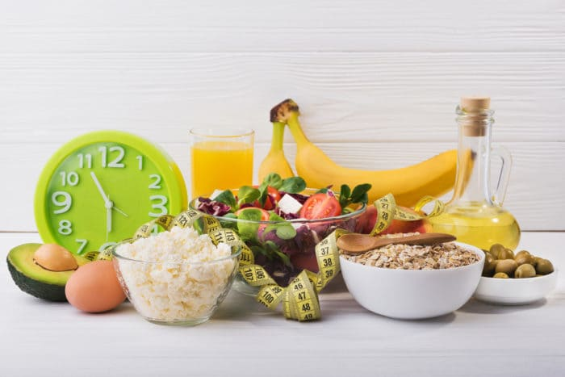

8 Cara Menurunkan Berat Badan

Beragam Cara Menurunkan
Berat Badan
Berikut ini adalah beberapa cara mudah menurunkan berat badan yang bisa
kamu terapkan :
1. Minum Air Sebelum Makan
Menurut penelitian, minum air sebelum makan bisa membantu menurunkan berat badan. Minum
air sebelum makan dapat membuatmu lebih cepat merasa kenyang, sehingga keinginan untuk melahap
makanan dalam jumlah banyak dapat berkurang.
Selain itu, perlu kamu sadari bahwa rasa haus terkadang muncul menyerupai rasa lapar. Jadi saat
mulai merasa lapar, coba atasi dengan minum air putih terlebih dahulu, dan hanya makan pada
waktunya. Dengan menerapkan cara ini, jumlah kalori yang kamu konsumsi juga dapat berkurang.
2. Jangan Lupa Untuk Sarapan
Tahukah kamu, sarapan adalah bagian penting dari penurunan berat badan? Dengan
sarapan
rutin, keinginan untuk mengonsumsi makanan atau camilan yang tidak sehat jadi berkurang.
Membiasakan diri sarapan juga akan membuat rasa lapar di siang hari berkurang. Efeknya,
keinginan
untuk mengonsumsi makanan dalam jumlah berlebihan pada jam makan siang akan turut berkurang.
3. Konsumsi Makanan Yang Tepat
Kamu yang sedang menjalani program penurunan berat badan, disarankan untuk
mengonsumsi
makanan berprotein dan berserat. Makanan berprotein bisa membantu tubuh membakar lemak dan
menjadi
sumber energi. Pilih sumber protein yang sehat untuk tubuh, seperti putih telur, yoghurt,
daging
tanpa lemak, makanan laut, kedelai, kacang-kacangan atau keju.
Selain makanan yang tinggi protein, perbanyak pula konsumsi makanan berserat. Makanan
berserat dapat
membuatmu merasa kenyang lebih lama, namun rendah kandungan kalori. Makanan berserat yang
bisa kamu
konsumsi di antaranya adalah sayur, buah, makanan yang terbuat dari biji-bijian utuh,
kacang-kacangan, dan gandum.
4. Makan Dalam Porsi Kecil
Kamu bisa menyiasatinya dengan memakai piring atau mangkuk yang lebih kecil saat
mengambil makanan. Menurut penelitian, makan dengan piring atau mangkuk kecil dapat membuat
kamu
terbiasa makan dengan porsi yang sedikit, sehingga jumlah asupan kalori yang masuk ke dalam
tubuh
juga akan berkurang.
Makan dengan porsi kecil namun sering, yaitu 4-5 kali sehari, lebih baik dalam membantu
menurunkan
berat badan ketimbang makan dalam porsi besar sebanyak 3 kali sehari.
5. Tidur Cukup
Selain menjaga pola makan, pastikan waktu tidurmu tercukupi dengan baik. Sebab,
saat
kamu kurang tidur, produksi hormon ghrelin yang merangsang nafsu makan dapat meningkat.
Efeknya,kamu akan mengonsumsi makanan berkalori tinggi dalam jumlah banyak. Tentunya hal ini
akan
membuat diet penurunan berat badanmu jadi berantakan.
6. Buat jadwal makan teratur
Banyak yang beranggapan bahwa diet akan lebih cepat membuahkan hasil jika kita
melewatkan waktu makan. Ada yang memilih untuk tidak sarapan, tidak makan siang, atau tidak
makan
malam. Namun sebenarnya cara diet seperti ini salah.
Tidak apa untuk makan 3 kali sehari asalkan dengan memerhatikan aturan porsi di atas. Jika
memang
ingin mengurangi porsi makan, Anda bisa membagi 3 waktu makan besar menjadi 6 kali makan
sepanjang
hari dengan porsi yang lebih kecil.
Kuncinya, hindari makanan tinggi lemak dan tinggi kalori. Pastikan Anda selalu sarapan
dengan
makanan yang tinggi protein dan serat agar bisa tetap kenyang hingga siang hari.
7. Kurangi Gula dan Garam
Makanan tinggi gula, garam, minyak, dan lemak juga berkalori tinggi sehingga buruk
bagi
tubuh.
Ingat, makanan berkalori tinggi adalah awal mula berbagai masalah kesehatan, dari kenaikan
berat badan, diabetes, hipertensi, kolesterol tinggi, hingga penyakit jantung.
Kementerian Kesehatan RI merekomendasikan kita untuk membatasi porsi gula, garam, dan lemak
dengan
prinsip G4G1L5 agar lebih mudah diingat. Panduannya yaitu, gula 4 sdm per hari, garam 1
sendok
teh
per hari, dan lemak sebanyak 5 sendok makan/hari.
8. Bergerak Aktif
Sudah bukan rahasia umum lagi bahwa olahraga selalu dikaitkan dengan penurunan
berat
badan. Olahraga yang dilakukan secara rutin akan membantu membakar kelebihan kalori yang
tidak
bisa
dipangkas hanya dengan menjalani diet.
Kamu dapat mempraktikkan cara mudah menurunkan berat badan di atas sebagai bagian dari pola
hidup
sehat. Jangan tergoda oleh berbagai diet menurunkan berat badan dengan cepat, karena
berisiko
mengganggu kesehatan dan membuat berat badan mudah untuk naik kembali.
Jika perlu, kamu dapat berkonsultasi dengan dokter gizi untuk program penurunan berat badan.
Dokter
gizi akan memberikan rencana diet yang sesuai kondisi kesehatanmu.